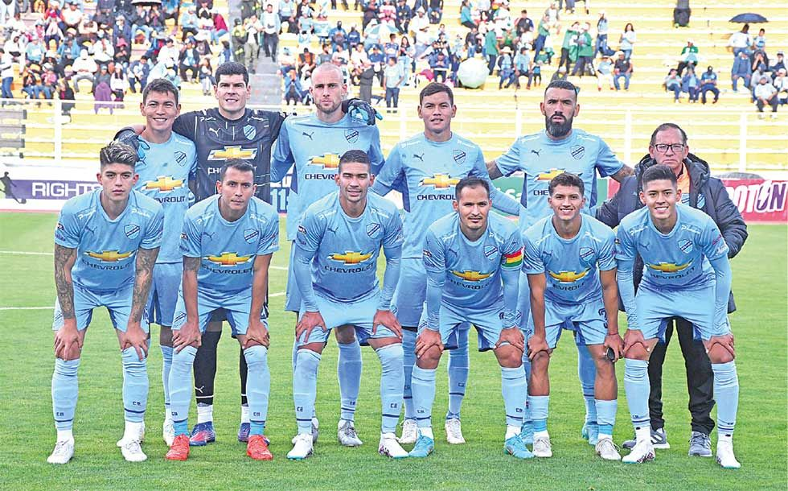

🎉 Bolívar celebra 100 años con victoria
12 de abril de 2025 - La Paz
El Club Bolívar festejó su centenario con una goleada histórica: 5-1 frente a Wilstermann en el estadio Hernando Siles, ante más de 20.000 fanáticos.
Fue una jornada inolvidable, con goles, homenajes, y un show espectacular. Bolívar reafirma su legado como uno de los grandes del fútbol boliviano.